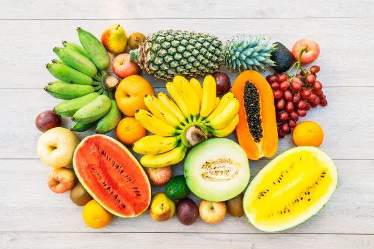
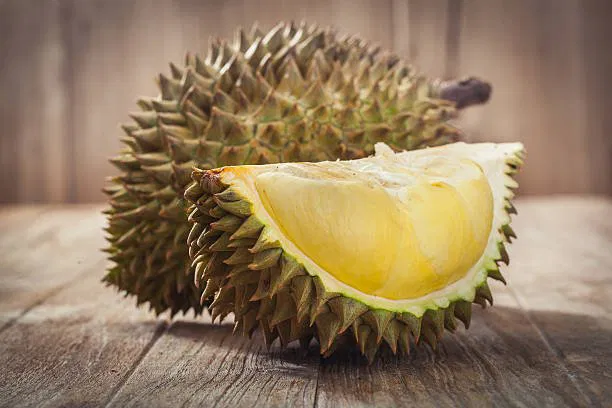
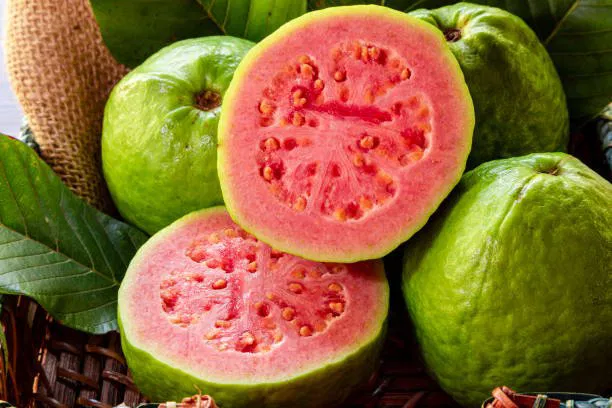
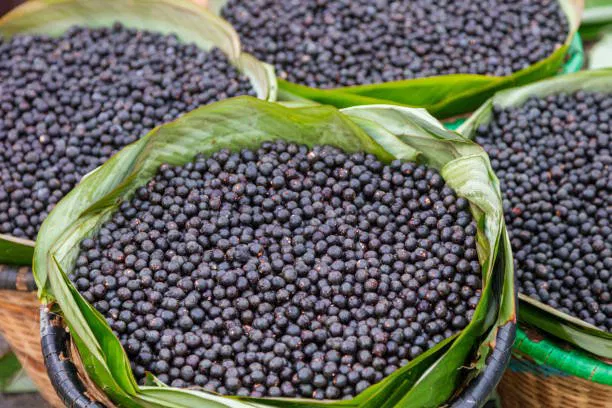
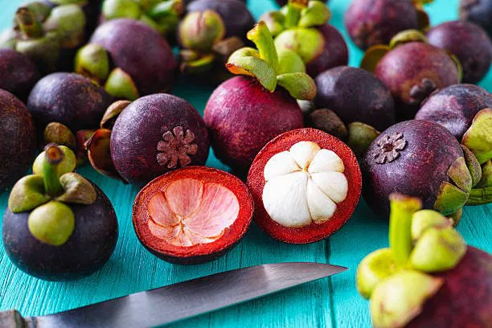
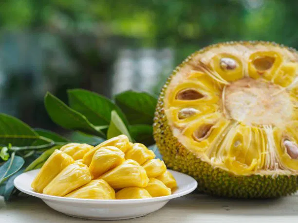

Apa Saja yang Termasuk Buah Tropis?
by Danang Lukmana | October 18, 2021

Apa Saja yang Termasuk Buah Tropis?
Buah tropis gak cuma enak dan segar, ia juga punya kandungan nutrisi seperti vitamin, serat, dan mineral yang tinggi. Iklim tropis memang menawarkan lebih banyak variasi buah-buahan dibandingkan iklim sub-tropis. Indonesia bisa jadi salah satu contoh negara dengan beragam pilihan buah-buahan tropis. Sebelum cari tahu lebih jauh soal jenis buah tropis, simak dulu yuk pengertian lengkapnya di bawah!
Buah Tropis, Apa Itu?
Melansir dari DelightedCooking, pengertian dari buah tropis adalah setiap buah yang dihasilkan dari tanaman yang tumbuh dan memiliki habitat asli di daerah beriklim tropis. Secara konsep geografis, daerah tropis adalah wilayah yang terletak di garis Khatulistiwa, atau tepatnya dari garis lintang 0 hingga 23,5 derajat Lintang Utara maupun Selatan.

1. Durian
Di Indonesia, siapa sih yang gak kenal dengan buah yang satu ini? Tekstur kulit keras berduri dengan aroma tajam dan tekstur daging yang lembek seperti krim butter menjadi ciri khas utamanya. Dikenal sebagai “King of Fruit”, durian memang buah endemik yang tumbuh di wilayah Asia Tenggara, mulai dari Thailand, Malaysia, Indonesia, dan Filipina.

1. Jambu Biji atau Guava
Guava atau dikenal di Indonesia sebagai jambu biji, adalah pohon tropis yang berasal dari Amerika Tengah. Namun, sudah banyak dikembangkan di Asia Tenggara seperti Indonesia dan Thailand yang terkenal dengan jambu Bangkoknya.
Daging buah jambu biji sangat kaya akan antioksidan, vitamin C, potasium, dan serat. Kandungan nutrisi yang luar biasa ini memberi mereka banyak manfaat kesehatan. Daun jambu biji juga bisa digunakan sebagai teh herbal dan diekstrak menjadi suplemen kesehatan.

4. A?ai Berry
Buah a?ai (dibaca: asay) berasal dari Amerika Selatan dan Tengah, terutama di negara-negara seperti Brasil dan Belize, serta menjadi makanan suku-suku di pedalaman Amazon. Buah ini cukup unik karena pohonnya seperti palem-paleman, tapi buahnya bulat-bulat hitam keunguan seperti blueberry. Jika dikonsumsi dan dijadikan olahan akan menghasilkan warna ungu.

5. Manggis
Manggis bisa ditemukan terutama di Asia Tenggara, seperti Kamboja, Thailand, Malaysia, dan Indonesia, selain itu juga bisa ditemukan di wilayah Cina Selatan dan Vietnam. Baik kulit ungu keras yang khas, daging putih lembut yang manis, biji pahit, dan kulit kayu batang pohonnya semua bisa digunakan untuk tujuan pengobatan.

2. Nangka
Nangka memiliki ciri khas ukurannya yang bisa sangat besar ketika matang, dan memiliki kulit keras berduri, tapi gak setajam durian. Aroma daging buahnya juga sangat wangi dengan getah yang cukup lengket. Buah ini aslinya berasal dari India Selatan, tapi juga populer di Asia Tenggara, dan mulai dibudidayakan di wilayah Afrika dan Brazil.
Dalam pengobatan tradisional Asia, tanaman ini sudah lama digunakan untuk melawan infeksi dan menyembuhkan luka. Selain itu juga bisa membantu mengurangi infeksi saluran kemih, diare hingga eksim. Daging buahnya yang manis segar, mengandung vitamin C yang juga bagus memperkuat imun tubuh. Nah, itu tadi beberapa jenis buah tropis yang enak dan bermanfaat untuk kesehatan. Masih banyak buah tropis yang gak disebut dalam daftar. Dari yang gampang dijumpai sepertinya pisang, mangga, pepaya, dan nanas. Sampai yang langka seperti jamblang, menteng, buni, dan kepel. Kalau buah tropis favoritmu apa nih, Nibblers?